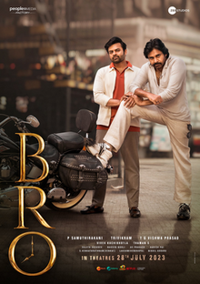

BRO Review: Average Remake Bro!

Rating:⭐⭐1/2
BRO is really just an average remake of an underrated Tamil film Vinodhaya Sitham. I respect Pawan Kalyam, but DUDE STOP DOING REMAKES MAN!
Like all you do remake a strong film and "commercialize" in a way. I'm not a huge Pawan Kalyan fan but all I know is that dude chooses the most interesting
scripts to not dissapoint some fans. I will say for PK fans you will def get some references. For regular moviegoers, consider it an average film and get it
out of the way. Siai Dharam Tej did fine,but like dude just overacts in a way. Samuthikirani is the director for this film as well, and I will say he tried his
best. It just didn't match up the level of Vindhaya Sitham. Overall, strictly for PK fans!